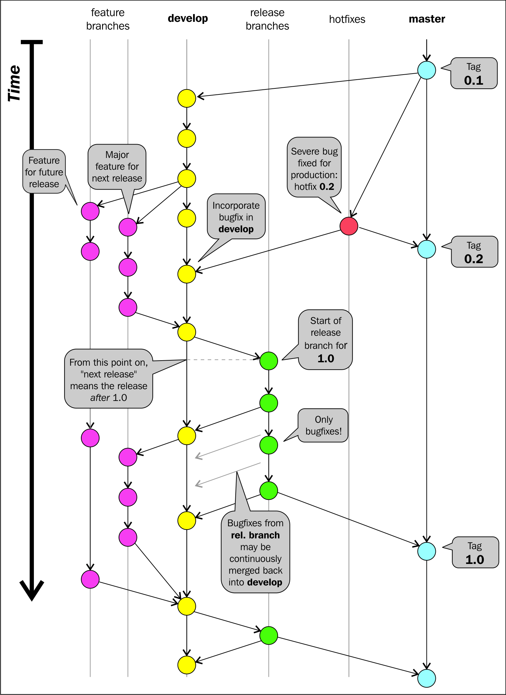
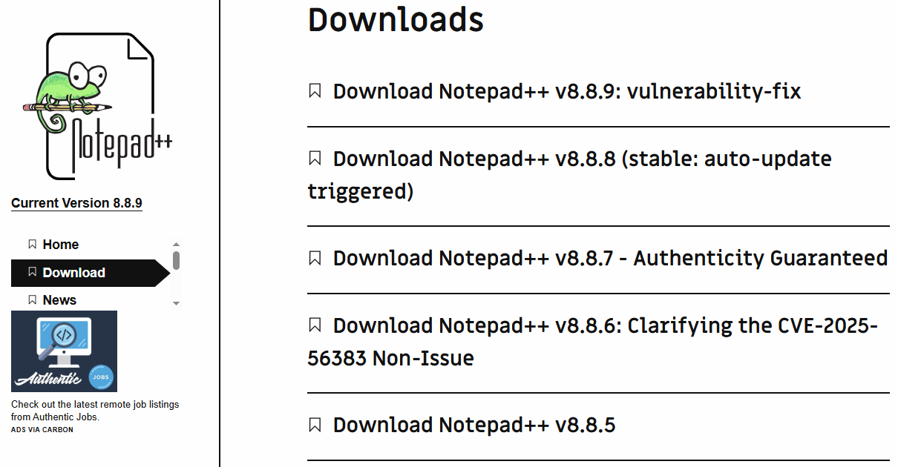

Source Code Management
Everything in modern software development is code,
and organizations need a reliable system to store and manage it.
Both developers and operations teams rely on
a central storage location for their respective types of code.
The Need for Source Code Control
Terence McKenna once said that “everything is code.”
While this may not be universally true, in the DevOps world, nearly
everything can be represented in codified form:
- The applications we build
- The infrastructure that hosts our applications
- The documentation describing the products
- and configuration code.
- Supports collaboration between development & operations.
- Enables version control, branching, and rollback.
- Foundation for CI/CD and DevOps workflows.
Even hardware configurations and system behavior can be driven by software.
Because of this, the source code repository becomes the heart of the organization.
Almost everything created or configured passes through it during its life cycle.
History of Source Code Management
In order to understand the central need for source code control, Let us have a brief look at the development history of source code management.
- Understanding SCM history helps identify required features that we ourselves might need.
- Evolution shows how code collaboration and workflow needs grew over time.
Early Approach: Separate Archives
- Old versions stored as separate archives.
- Still used in free/open-source projects (tar archives).
- Simple but limited—no version tracking or collaboration features.
Centralized SCM with Check-In / Check-Out
- source code was managed in a centralized way, and each file was treated independently
- Check-Out
- Files could be locked(Check-Out) by a developer for exclusive editing.
- The system can lock the file so no one else can modify it at the same time.
-
This prevents conflicts because only one person can edit a locked file.
-
Other developers can still read the file, but they cannot write changes until it’s unlocked.
- Check-In
When the developer is done, they check in the file.
The system:
- records a new version,
-
unlocks the file,
-
updates the central repository.
- Examples: Revision Control System (RCS), Source Code Control System (SCCS).
- Prevents merge conflicts by avoiding concurrent edits.
-
Limited collaboration flexibility, because locking blocks parallel work.
- Rare today
Centralized with Merge-Before-Commit Systems
- Developers must merge latest changes before committing.
- Supports centralized workflows used by many organizations.
- Examples: Concurrent Versions System (CVS), Subversion (SVN).
- Subversion still widely used in enterprise environments.
Decentralized Systems
- Each developer has a full local repository.
- Enables flexible, concurrent, and faster workflows.
- More power → more potential for mistakes (“powerful guns”).
- Examples: Git, Mercurial, Bazaar.
The Future of SCM
- Git dominates today's decentralized SCM landscape.
- Alternatives still exist and may challenge Git in the future.
- SCM tools continue evolving as collaboration needs grow.
Roles and Source Code
- SCM is a natural meeting point for all DevOps roles.
- Some roles adopt it easily; others need cultural change.
Developers
- SCM is essential for coding, branching, merging, and collaboration. It's their bread and butter.
Operations
- Store infrastructure as code: scripts, topology, server configs.
- SCM helps manage versions of environments and deployments.
Quality Assurance
- Automated tests stored as code (Selenium, JUnit, etc.).
- Ensures consistent and repeatable testing.
Documentation Challenges
- Many organizations employ a wiki solution, such as the wiki engine powering Wikipedia
- Many organizations still use Word files, emails, shared drives.
- Hard to find, inconsistent, From a DevOps viewpoint, this is regrettable.
Improving Documentation
- Use wikis or markdown stored in SCM (GitLab/GitHub wikis).
- Static site generators like Hugo can create clean documentation sites.
Which source code management system?
- Many SCM systems exist and continue to evolve.
- Git is currently the dominant choice.
Why Git?
- In the early 2000s, the Linux kernel project used a commercial version control system called BitKeeper.
- However, in 2005, BitKeeper’s free-of-charge license for the Linux community was withdrawn after a disagreement between the BitKeeper company BitMover, Inc. and some open-source developers.
- This meant the Linux project could no longer legally use BitKeeper for development.
- This triggered Linus Torvalds to create a new version control system
- Designed for complex Linux kernel workflows.
- Powerful enough for most organizations.
DVCS Advantages
- Work offline efficiently anywhere.
- Faster—no server needed for every operation.
- Private work until ready to share.
- Multiple remotes → no single point of failure.
Other Distributed Systems
- Bazaar (bzr): Backed by Canonical(company behind Ubuntu); supported by Launchpad.
- Mercurial: Used by Firefox, OpenJDK.
Git Complexity
- Powerful but can be hard to understand.
- Frontends and UI tools help simplify workflows.
- Often a topic of debate among developers.
Source Code Management System Migrations
- Organizations often move from one Source Code Management (SCM) system to another.
- Migrations vary from simple to very complex.
Keeping History — When It Matters
- Some projects value full history (example: Emacs).
- A well-structured commit history explains:
- why a change was made
- how a bug was fixed
- the reasoning behind design decisions
- Preserving commit history requires time and effort.
When History Isn’t Critical
Reconstructing every commit, branch, comment, and tag from a legacy SCM can require significant time and tooling, but provide very little practical benefit.
- Then organizations don’t do complete historical migration.
- Old SCM can remain online for reference.
- Common examples: VSS, ClearCase migrations.
- Legacy systems like:
- Microsoft Visual SourceSafe (VSS)
- IBM Rational ClearCase
- are notoriously difficult to migrate cleanly to Git.
Easy Migrations
- Some systems migrate cleanly with full history.
- Example: Subversion → Git is usually straightforward and easy.
- In these cases, historic accuracy need not be sacrificed.
Choosing a Branching Strategy
- Branching strategy is a convention, or a set of rules, that describes
- when branches are created,
- how they are to be named,
- what use branches should have, and so on.
- Important for team collaboration and smooth deployments.
- Most source code management systems do not prescribe a particular branching strategy and neither does Git.
- Git doesn’t enforce a strategy — teams decide what fits best.
- The SCM simply gives you the base mechanics to perform branching.
Feature Branches
- A feature branch is a branching strategy that is used to keep track of ongoing development regarding a particular feature, bug, and so on
- Cheap and easy to create in Git.
- Keeps related changes together and organized.
Git Flow — Popular Strategy
There are many well-known branching strategies. Vincent Driessen formalized a branching strategy called Git flow, which has many good features.

- Includes master, develop, feature, release, and hotfix branches.
Git Flow — How Branches Are Used
- master: Finished, stable code; tagged releases.
- develop: Work for the next release.
- feature branches: New features; merged into develop.
- hotfix branches: Urgent production fixes; merged into master.
Git flow is too complex, and, in those cases, it can be scaled down. There are many such scaled-down models available.
Here are several well-known scaled-down alternatives to Git Flow—simpler branching models commonly used when Git Flow is considered too heavy or process-intensive:
1. GitHub Flow
- Single long-lived branch: main
- Short-lived feature branches
- Continuous deployment friendliness
- Very simple, great for web services
2. GitLab Flow
- GitHub Flow + optional environment branches (e.g.,
staging, production)
- Flexible, used in CI/CD pipelines
- Lightweight compared to Git Flow, but more structured than GitHub Flow
3. Trunk-Based Development
- One main branch (“trunk”)
- Tiny branches or direct commits
- Fast integration, used by high-velocity teams (Google, Meta)
- Works well with feature flags
4. Simple Two-Branch Model
- Long-lived main (or master)
- Long-lived develop
- Everything else is short-lived feature branches
- Often used by small teams that still want some separation between “stable” and “working”
Other Strategies- The Forking Pattern
The Forking Pattern is a branching/workflow model where each developer maintains their own full copy of the main repository.
This "copy" is called a fork.
Workflow Overview
Instead of pushing changes directly to a shared central repository, developers:
- Fork the main repository (create a personal copy on GitHub/GitLab)
- Clone their fork to their local machine
- Make changes in feature branches
- Push changes to their own fork (not to the main repo)
- Create a Pull Request (PR) or Merge Request (MR) to the central repository
- A maintainer reviews and merges the changes
- Mainly used in open-source or external subcontractor scenarios.
- Not common for internal organizational development.
Branching Problem Areas
When teams try to follow Continuous Delivery (CD), they often want to use just one main branch (like master or main) and release everything from it.
This keeps things simple:
- Only one branch goes to production
- Testing is easier
- Deployment pipelines stay clean
Git Flow is one branching model that encourages this type of workflow.
Continuous Delivery (CD) practices and branching strategies can sometimes conflict.
Fast development team - They keep adding new features and merging them into the main branch.
Slow production environment - company has strict approval processes, or deployments require downtime that you want to avoid
This creates a timing problem:
-
On the main branch:
There are new features being developed, tested, and merged — but they are not ready for customers yet.
- In production:
You are running an older, stable version of the software.
- Suddenly a bug appears in production.
You must fix it right now and release it quickly.
- But the main branch already contains changes you don’t want to release yet.
- If you deploy the main branch, you will accidentally release unfinished features.
- Undesirable but common in real projects
The core issue
You need to deliver:
- the bug fix,
- without releasing the new features.
But because development is ahead of production, the main branch is no longer “safe” to deploy.
Two Basic Solutions
When you need to fix a bug in production but the main branch has unfinished features, there are two common ways to handle it:
1. Bug Fix Branch
- Create a new branch(Hotfixes) from the version that’s currently running in production.
- Apply the bug fix in that branch.
- Test it there.
- Deploy it from that branch.
Downside:
You may need extra testing environments because your main testing setup is already busy testing new development work.
2. Feature Toggling
- Instead of creating a special branch, keep working on the main branch but turn off unfinished features using feature flags.
- Fix the bug on the main branch.
- Deploy the main branch.
- New features stay hidden and inactive in production.
Advantage:
Only one branch to test and deploy.
Considerations for Choosing
- Feature toggling works well for backward-compatible or entirely new features.
- Complex toggling logic can complicate testing.
- Bug fix branches complicate deployment and testing — where to test, version naming, etc.
- Testing resources may be scarce, especially for complex apps or external services.
Artifact version naming
It is convenient when every installable artifact has a proper
release number and a corresponding tag in the source code
management system.
This ensures traceability — you always know exactly which code produced
the artifact.

Snapshot Releases (Example: Maven)
Some tools, such as Maven, support snapshot versions.
A snapshot is a version with a “fuzzy” last part that changes as
development continues.
Problems with Snapshot Artifacts
- Drawback: It is difficult to identify which source code version produced a snapshot.
- Makes debugging broken installations more difficult.
- Violates a key testing principle:
The exact same binary that was tested must be deployed to production.
The Testing Problem
With snapshots, teams test the snapshot build repeatedly until testing is done.
After that, they create a proper release version, which is then deployed.
But this release is not the same binary that was tested — creating risk.
Issues with Snapshots
- Snapshots hide which code was built.
- Not the same artifact tested → breaks CD best practices.
- Use build numbers instead of snapshots.
Choosing a Git Client
One of the strengths of Git is that it does not mandate a specific client.
Many clients are available, all compatible with each other and built on
stable, well-tested Git core implementations.
Git Client Options
Most modern development environments provide built-in Git support.
- IDE-integrated Git clients (VS Code, IntelliJ, Eclipse)
- Standalone GUI tools(GitHub Desktop,Sourcetree)
- Command-line Git client(Standard Git CLI,Git Bash,PowerShell with Git)
Since all options work well, developers can usually choose based on personal preference.
The Command-Line Client
The CLI Git client is widely preferred, especially for operations work.
It is efficient when working remotely through SSH and supports all Git features.
Helping New Users
- Provide simple installation & usage instructions.
- Use organization wiki for standard Git setup guides.
Setting Up a Basic Git Server
Setting up a simple Git server is straightforward and useful for learning.
Though it doesn’t scale well for large organizations, it provides a solid foundation
before moving to advanced Git hosting solutions.
What You Need
- A client machine with two user accounts
- Git and SSH installed
- SSH public/private keys for both users (
ssh-keygen)
- A server running an SSH daemon
We simulate two users pushing to one central Git server.
Git Server User Setup
Create a dedicated Git server user.
Add the two clients' public keys to:
~/.ssh/authorized_keys
This allows both client users to authenticate through SSH.
Creating a Bare Repository
A bare repository has no working directory and is ideal for servers.
cd /opt/git
mkdir project.git
cd project.git
git init --bare
After this, try cloning, committing changes, and pushing from your client machines.
Limitations of This Basic Setup
-
Does not scale well: Managing many users and projects becomes time-consuming.
-
Security complexity: Managing roles and permissions requires manual setup.
-
No fine-grained access control: Git alone can’t restrict users to specific repos or branches.
Why This Is Only a Starting Point
For a few users, this manual setup is acceptable.
But for organizations with many developers, automated and secure platforms are necessary.
Later, tools like GitHub Enterprise, GitLab, Gitea, or Bitbucket simplify:
- User management
- Access control
- Repository creation
- Permissions and audit logs
Shared Authentication
In an organization, many services (Git server, file servers, internal apps, VPN, etc.) need to verify who you are when you try to log in.
Instead of each service having its own separate list of usernames and passwords, organizations prefer to have one central system that stores and manages all user accounts.
A common solution is LDAP (Lightweight Directory Access Protocol).
It simplifies identity management across multiple systems.
Why Central Authentication?
- Single source of truth for user accounts
- Consistent access control across servers
- Simplifies onboarding/offboarding of employees
- Reduces duplication of credentials
Using LDAP for Authentication
It is assumed that most organizations already have an LDAP-based authentication server.
If not, setting up a test server is relatively simple and useful for experimentation.
Recommended Test Setup
A practical combination for testing purposes:
- 389 Directory Server – open-source LDAP server
- phpLDAPadmin – web-based UI for managing LDAP entries
These tools allow quick setup, user creation, and management for DevOps experiments.
Why Use a Test LDAP Server?
- Allows consistent authentication across multiple tools
- Useful for practice and learning DevOps workflows
- Ensures all upcoming servers in this book use the same user directory
- Safe environment for experimentation without affecting production
Setting up a test LDAP server provides a unified authentication base
for all systems you configure. This mirrors real organizational environments
and prepares you for practical DevOps infrastructure setups.
Hosted Git Servers
Some organizations, such as government or financial institutions, cannot allow
their code to be stored outside their premises due to legal or security concerns.
Others freely use hosted platforms like GitHub or GitLab
which provide private repositories and convenient Git tooling.
Why Use Hosted Git Services?
- No need to maintain your own server
- Fast setup and onboarding and Free accounts available
GitLab can also be installed on-premise if local hosting is required.
Key Features Offered by GitHub & GitLab
- Web interface for browsing repositories
- Built-in wiki for documentation
- Integrated issue tracker
- Commit history visualization
- Branch visualization
- Pull/Merge request workflow
Integration Considerations
While GitHub and GitLab provide many tools, organizations may already have:
- An internal wiki
- A documentation system
- An issue tracking system
In such cases, only the Git-related features may be used.
Large Binary Files in Git
Git was not originally designed to store large binary files such as images, videos, or audio.
Adding such files directly makes Git operations slow and reduces efficiency.
Why This Is a Problem?
- Git stores full copies of binaries for each version
- Repository size grows rapidly
- Clone, pull, and fetch operations become sluggish
- Breaks Git’s core advantage: speed
Why Not Use a CMS?
Media files are often handled by CMSes, but CMS systems have drawbacks:
- Poor or missing scripting/automation support
- Not ideal for DevOps workflows
- Harder to integrate with CI/CD
Solutions for Large Files
- Git LFS – supported by GitHub & GitLab, Easiest to set up, good for most teams
- git-annex – supported by GitLab Enterprise Edition, More flexible & powerful, but harder to configure
Both are Git extensions designed to handle large media files more efficiently.
Key Takeaway
Large binary versioning is still a pain point in Git.
Git LFS is the easiest approach, while git-annex provides deeper flexibility for advanced needs.
Trying Out Different Git Server Implementations
Git’s distributed architecture allows you to experiment with multiple Git servers
without disrupting your workflow.
Why Experiment with Git Servers?
- Different servers offer different features & integrations
- Helps identify which solution best fits organizational needs
- Useful for testing CI/CD tools, permissions, workflows, and UI
Client-Side Setup Stays the Same
Regardless of the server used, the client experience remains consistent:
- Same Git commands (clone, pull, push, fetch)
- Same local repository structure
- Same SSH/HTTPS authentication methods
Multiple Servers in Parallel
Git makes it easy to connect to multiple servers simultaneously.
- Projects can use different servers at the same time
- Developers can evaluate multiple hosting options
- Git supports multiple remotes in a single repository
git remote add gitlab <url>
git remote add github <url>
Key Takeaway
Git’s flexibility allows organizations to explore and compare different Git
server solutions with minimal disruption. The client-side workflow remains simple
and consistent across all server types.
Gerrit – Code Review for Git
Gerrit is a Git-based code review tool used when teams need strict workflow control.
- Useful for reviewing sensitive or critical infrastructure code.
- Allows approvals by senior developers or authorized reviewers.
- Encourages high-quality code through structured reviews.
Why Gerrit?
- Fine-grained access control.
- Mandatory reviews for sensitive code.
- Better clarity and quality via controlled merges.
- Useful when teams feel nervous about direct commits to infrastructure repositories.
Running Gerrit with Docker
Quick method to try Gerrit locally:
docker run -d -p 8080:8080 -p 29418:29418 openfrontier/gerrit
Open Gerrit UI:
http://localhost:8080
Installing git-review
Helper tool used instead of git push for Gerrit:
sudo dnf install git-review
Allows pushing changes to Gerrit for review.
The Value of Clean Git History
When collaborating, clear history improves communication.
- Remove unnecessary commits.
- Squash small commits into one.
- Use rebasing to maintain clean linear history.
Preparing Changes for Review
1. Rebase on latest server version:
git pull --rebase origin master
2. Squash or reorder commits:
git rebase -i origin/master
Your final commit should be clean and easy to review.
Gerrit Review Process
- Developer pushes change using
git-review.
- Reviewer opens Gerrit web UI.
- Reviewer reads diff, adds comments.
- Reviewer approves & submits change.
- Gerrit merges into
master.
Is Gerrit Worth It?
- ✔ Great for sensitive environments.
- ✔ Ensures only reviewed code is merged.
- ✔ Useful when teams must gatekeep critical systems.
- ✘ Avoid if your team only wants reviews “just because”.
- ✘ Better to remove bad practices (like passwords in repos) than hide code.
Conclusion
Gerrit is best when:
- You need strict, enforced code reviews.
- Quality and safety of code changes are top priority.
- A central authority must approve every commit.
🔄 The Pull Request Model
The pull request (PR) model is a workflow used to manage code changes through review and approval before merging into the main branch.
💡 What Is a Pull Request?
- A developer forks/clones the main repository.
- They make changes in their personal copy or feature branch.
- They submit a pull request asking the repository owner to merge their changes.
- The repository maintainers review, discuss, request changes, or approve the PR.
🔒 Why Pull Requests?
- Repository owners maintain full control of what gets merged.
- External contributors cannot push directly to the main repository.
- Clear review process encourages collaboration and code quality.
- Each change is documented with comments, commits, and discussions.
🎯 Advantages of the PR Model
- Easy for developers to understand.
- Familiar workflow used widely in open-source GitHub projects.
- Supports discussions, inline comments, and automated checks.
- Allows controlled contribution from external developers.
🏗 Requirements for Pull Request Workflow
To use the pull request model locally (inside an organization), you need platforms that support the PR workflow:
- GitHub (Hosted or GitHub Enterprise)
- GitLab (Self-hosted or Cloud)
- Gitea or Bitbucket Server (optional alternatives)
📌 Summary
- PR model allows safe, controlled merging of changes.
- Ideal for open-source and large distributed teams.
- Encourages high-quality code through review workflows.
- Requires Git hosting software with PR capabilities.
🚀 GitLab Overview
GitLab is a powerful platform built on top of Git, offering code hosting, CI/CD, issue tracking, visualization, and DevOps automation.
⚙️ Installation Complexity
GitLab is a large Ruby-based system with many dependencies, so installing it manually can be difficult.
Docker Compose simplifies this process dramatically.
📦 Installing GitLab with Docker Compose
mkdir gitlab
cd gitlab
wget https://raw.githubusercontent.com/sameersbn/docker-gitlab/master/docker-compose.yml
docker-compose up
The docker-compose command reads the YAML file and automatically starts all required services.
🧱 Components Started
Docker Compose starts three containers:
- gitlab1 – Ruby web app + Git backend
- postgresql1 – Database for GitLab
- redis1 – Key-value store for caching & queues
📂 Data Volumes
All GitLab data is stored under:
/srv/docker/gitlab
This keeps application data persistent.
🔐 Logging In
Default login credentials (may change over time):
- Username: root
- Password: 5iveL!fe
📁 Try Importing a Project
- Import from GitHub
- Import a private/local repository
- Explore visualization of commits, branches, and merge requests
⭐ GitLab’s Most Valuable Features
While GitLab has many features, two solve major DevOps bottlenecks:
- SSH key management – Easy user authentication
- Creating new repositories – Fast and streamlined
These contribute significantly to removing workflow slowdowns.
📊 Visualization Features
GitLab provides:
- Commit history graphs
- Branch visualization
- Inline merge request discussions
Although useful, developers may still prefer Git client-side visual tools.
🎯 Summary
- GitLab adds significant DevOps automation on top of Git.
- Docker Compose makes installation much easier.
- Core strengths: repository creation & SSH key management.
- Visualization is helpful but often secondary.
📘 Chapter Summary
This chapter explored essential decisions involved in managing source code within a DevOps workflow.
📁 Source Code Management Options
- Reviewed different Git server implementations
- Explored hosted solutions such as GitHub & GitLab
- Compared lightweight and advanced Git setups
🌿 Branching & Workflow Decisions
- Discussed branching strategies and their trade-offs
- Examined the pull request model and code review workflows
- Understood the importance of clean commit history
🔢 Version Numbering
- Snapshot versions vs. real release versions
- Why reproducible builds and tagged releases matter
- Build numbers as a safer alternative to snapshots
🧭 Key Takeaways
- Git workflows must balance speed, safety, and clarity
- Infrastructure choices should match organizational needs
- A clear strategy avoids bottlenecks and confusion